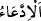

cismânî ve rûhânî olarak lezzetlendikleri şeyleri beyân etmektedir.
Meyvelerin hepsine “
” denir. Mânâ ise şöyledir: Cennette bizden kendilerine bir
inâyet olarak onlar için meyve çeşitlerinden her bir çeşitten güzelliği, olgunluğu ve
lezzeti tarif edilemeyecek çok ve fazla meyve vardır. Nitekim rivâyete göre cennetteki
tek bir nar bir hâne halkını doyurur. Cennet nimetlerinin tamamı, dünya nimetleriyle sıfat
bakımından değil, ancak isim olarak müşterektir.
Bu âyette cennette açlık olmadığına işâret vardır. Çünkü meyve açlığı gidermek için
yenilmez.
Orada “Bütün arzuları yerine getirilir.” Bu cümle önceki cümleye atfedilmiştir. “
” ifadesinin “
”ye sadece atfedilmekle yetinilmemesi (“
ӟn tekrar edilmesi),
onların arzularının meyvenin peşinden gelen ve onu tamamlayan şeylerden ibâret
olduğunun vehmedilmemesi içindir.
Buradaki “ ” belli veya belirsiz pek yüce arzu ve talepten ibârettir. Mânâ şöyledir:
Onların kendileri için Allah’tan istedikleri pek yüce arzu ve talepleri veya güzellik
sebeplerinden ve mutluluğu gerektiren şeylerden ne olursa olsun bütün arzuları yerine
getirilir.
Şeyhzâde der ki: “Cennet ehli için istenilmesi doğru ve mümkün olan her şey onlar
daha talep etmeden hâsıl olur. Nitekim İmam (Râzî) şöyle der: “Bu âyetin mânâsı
cennet ehli kendileri için bir şey isterler de, taleb ettikten sonra onlara icâbet edilir
demek değildir. Bilakis bu âyetin mânâsı, bütün arzu ve istekleri hiçbir talep ve duâya
hâcet olmaksızın onlara verilecektir, demektir. Tıpkı bir kimse senden bir şey
istediğinde ‘O senindir, niçin onu istiyorsun’ demek gibi.
“
” temennî etmek/dilemek mânâsına da gelir. Nitekim “
(Benden
dilediğini temennî et)” derler. Buna göre mânâ ‘Onlara temennî ettikleri her şey
verilecektir’ demektir. İbn Abbâs (r.a.): “Cennetlik olan kimse yiyecek ve içeceklerden
istediklerini söylemeksizin önünde hazır görecek.” demiştir.
58. Onlara merhametli Rabb’in söylediği selam vardır.
Yani onları mübâlağa ile yüceltmek için Allah Teâlâ tarafından melek vâsıtasıyla veyâ
vâsıtasız olarak selâm verilir. Bu makam medih makamıdır. Çünkü bu söz, merhametli
Rab’den sâdır olmaktadır. Dolayısıyla emrine tâzim gösterilmesine lâyıktır. Bir hadîste
şöyle buyrulmuştur: “Cennet ehli nimetler içindeyken birden üzerlerinde bir nur
parlar. Onlar başlarını kaldırırlar ki ne görsünler, Rab Teâlâ üst taraflarından
onlara tecellî etmiş. Allah Teâlâ onlara: “
(Selam size ey cennet
ehli!)” buyurur. İşte “Onlara merhametli Rabb’in söylediği selam vardır.” âyeti